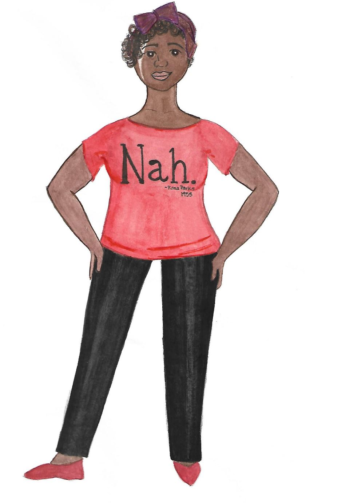

Welcome
My name is Nicole Brewer.
I facilitate anti-racist theatre training for theatremakers all over the globe. Anti-racist theatre (A.R.T) is defined as practices and policies that actively acknowledge and interrogate racism generating dynamic anti-racist ideas, values, and policies that counter the oppression of any group of people in any aspect of education or production of theatre.
Click Here To Learn More
Report Racism in Theatre documents racism, racist ideas, practices, and policies that are occuring in all areas that comprise of the theatre industry; including, training institutions, producing organizations, unions, and more.
This resource is for our healing. It’s about sharing our experiences as a means of collective resilience to the systematic norms that require our complicity in our own continued oppression.

How To Use This Site
You may report overt or covert instances that run on the spectrum of, "I know that's racist," to, "I'm not sure..." In the case of "I'm not sure...," trust your gut. It more than likely was, in fact, racism.
Feel free to share what you feel comfortable sharing.
Any length of report is welcome. Your report can be in any form; poetry, paragraph, short sentence, song, scene, etc.
You can use your name, an alias, or be anonymous.
Don’t want to use our reporting feature? You can still be a part of this movement by using
#reportracisttheatre to share your report on social media.
Report Here
Why I Started This Website
This website is a product of my anti-racist ethos. It’s a tool for releasing the racism and trauma we’ve been taught to hold within our bodies; the result of which, is career burnout and life burnout. Literally, the life expectancy of Black, Indigenous, and People of Color is shortened due to the impact of daily systemic racism.
Learn more at African American Policy Forum.
Our collective silence protects racists giving room for racist ideas and policies to flourish.
Our collective resilience, ingenuity, allyship, and desire for justice fortifies us against hopelessness, fear, and the lie that change is gradual and not possible in our lifetime.
What's Next?
Once reports start coming in, we will be working to create a scrolling “newsfeed" of your reports. We also aim to add options that allow you to send your report as an audio file.
Donate to the web developers to help make sure this can happen.
Acknowledgements
This website would not be possible without Mykayla Fernandes, founder of
PrincexDesign, who generously listened and said,
"I can support and help you.” Acknowledgements also go out to Viviana Vargas, of
Advancing Arts Forward, who was the
connector and soundboard that allowed this web-space to be possible.
PrincexDesign manufactures equitable solutions industries such as architecture, theatre, web design, software, mobile applications, game development, and graphic design. Visit
princexdesign.com.
Advancing Arts Forward is a movement to advance equity, inclusion, and justice through the arts by creating liberated spaces that uplift, heal, and allow artists to explore their vast potential to change the world. Visit
advancingartsforward.com.